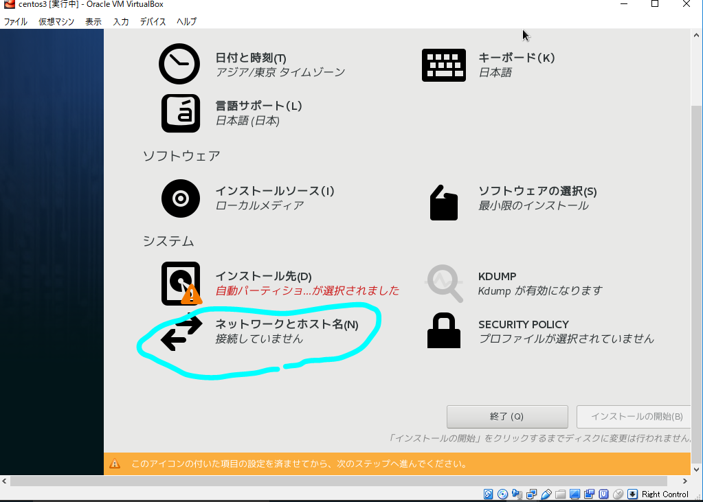

CentOS install¶
VirtualBoxに作るから、VirtualBoxをダウンロード＆インストール。
あとは普通にインストールしていく。
インストールするHDDを選択したりするところの下のボタンにネットワークの設定がある。
ネットワーク(enp0s3)をONにする。
10.0.0.0/24のIPが割り当てられるのを確認する。
インストールする。
rootパスワードの設定とアカウントの作成をする。
アカウント作るとき管理者のところにチェックを忘れずに。

CentOS上での作業¶
OSのアップデート、PHPのインストール¶
適当なターミナルエミュレータから、locahost:2222にsshでアクセス。
cygwinとか使える人、macの人はターミナル開いて:
ssh -p 2222 username@localhost
でアクセス可能。usernameは自分の作ったユーザー名を入れる。
こっから先はプロキシがあると難しい。プロキシが無い環境が本当は望ましい。そうも言ってられないし、とりあえずプロキシ有りでできるとこまで頑張る。
とりあえずプロキシ設定。:
export http_proxy=http://172.24.2.60:15080
export https_proxy=https://172.24.2.60:15080
色々プロキシ設定をファイルに書き込むのは面倒だから環境変数で。yumはsudoの-Eオプションをつけると、環境変数読み込んで良しなにやってくれる。
環境変数はlogoutすると、消えてしまう。消えるのが嫌なら.bashrcに追記しておく。
家でプロキシ無しで、学校ではプロキシ有りでってときは毎回打ち込むのがおすすめ。
まずアップデート、そしてphp56系を入れる。:
sudo -E yum update
sudo -E yum install epel-release
sudo -E rpm -Uvh http://rpms.famillecollet.com/enterprise/remi-release-7.rpm
sudo -E yum install --enablerepo=remi,remi-php56 php php-devel php-mbstring php-pdo php-gd php-xml php-mcrypt php-intl php-mysqli
Composer Install¶
プロキシ環境だと、https://getcomposer.org/download/に書かれてるのはうまくいかない。途中まではうまくいく。そこで、１行目はphpを使わず、curlを使って落としてくる。:
curl https://getcomposer.org/installer > composer-setup.php
2行目はインストーラが正しいかチェックしてるだけだから、不要。気になればやる。
3行目はそのまま実行。(php composer-setup.php)
4行目はインストーラを消す。やらなくても大丈夫。
Create a CakePHP Project¶
ここはプロキシがあるとhttpsで必要なファイルが落とせないバグがあるっぽい．．．。
プロキシの無い環境ならうまくいく。
テザリングとかでうまいこと頑張ってくれ．．．。とりあえず実行してみる、駄目だったら諦めるか、テザリング、WiMAXとかで．．．。誰か一人が落として、zipで固めてから配ってもいいと思う。:
php composer.phar create-project --prefer-dist cakephp/app my_app_name
うまくいくと、my_app_nameってディレクトリができてる。最後にpermisssionなんたらって聞かれるからyesしておくとあとで楽。
Apacheで動かしたいから、DocumentRootに移動しておく。:
sudo mv my_app_name/ /var/www/html/
Apache MariaDBのインストール¶
以下のコマンドでインストール。:
sudo -E yum install mariadb mariadb-server
sudo -E yum install httpd
起動する。:
sudo systemctl start httpd
sudo systemctl start mariadb
MariaDBの初期設定をする。以下のコマンドを実行。:
sudo mysql_secure_installation
質問は以下のように答えておく。:
Enter current password for root (enter for none): Enter
Set root password? [Y/n] Y
New pasword: root
Re-enter new password: root
Remove anonymous users? [Y/n] y
Disallow root login remotely? [Y/n] Y
Remove test database and access to it? [Y/n] y
Reload privilege tables now? [Y/n] y
WebAppで使うユーザーとデータベースをつくる。
以下のコマンドを実行。:
mysql -u root -p
Enter password: root
データベースに接続したら、:
MariaDB [(none)]> create database cakephp;
MariaDB [(none)]> grant all on cakephp.* to piyo@localhost identified by 'hogehoge';
ホストOS上のブラウザを使って、localhost:8888(ポートフォワーディングで設定したポート)にアクセスすると、ページを表示できるようにしたい。ただ、Firewallがあるからアクセスできない。次はFirewallの設定。
Firewallの設定¶
Firewallのhttp,httpsをぶちあける。 以下のコマンドを実行してみる。:
sudo firewall-cmd --get-active-zones
次の結果が得られる。(人によって違うかもしれない):
public
interfaces: enp0s3
ファイアウォールはzoneという概念で指定する。現在アクテイブになっているzoneは上記のコマンドでわかる。
インストールした状態ではおそらくpublicになっている。
このpublicというzoneに対してhttpとhttpsを通過するように設定する。
現在通過を許可しているプロトコルを確認する。以下のコマンドを実行:
sudo firewall-cmd --list-services --zone=public --permanent
次のような結果が得られる。(人によって違うかもしれない):
ssh dhcpv6-client
sshとdhcpv6-clientというのが許可されている。これにhttpとhttpsを追加するには、:
sudo firewall-cmd --permanent --zone=public --add-service=http
sudo firewall-cmd --permanent --zone=public --add-service=https
を実行。–permanentはシャットダウンしたりしても、永続させるための識別子。
確認する。:
sudo firewall-cmd --get-active-zone --permanent
----------------------------
ssh dhcpv6-client http https
----------------------------
正しく設定できている。
Firewallをリスタートする。:
sudo systemctl restart firewalld
ホストOSのブラウザでlocahost:8888(さっきポートフォワーディングで設定したポート)にアクセスすると下図のサイトが表示される。表示されれば成功。
httpd.confの書き換え¶
localhost:8888にアクセスしたときに、先程作ったプロジェクトが表示されるようにするのと、その他諸々のためにhttpd.confを書き換える。
とりあえずvimが使いたいから:
sudo yum install vim
でインストール。vimが使いたかっただけなので、好きなエディタを使ってください。
では、:
sudo vim /etc/httpd/conf/httpd.conf
httpd.confを開く。
95行目 ServerNameのコメントアウトを外す。(やらなくても大丈夫)
102~105行目の<Directory />を変更。:
<Directory />
Options FollowSymLinks
AllowOverride All
</Directory>
119行目付近:
DocumentRoot "/var/www/html/my_app_name"
131~157行目:
<Directory "var/www/html/my_app_name">
Options Indexes FollowSymLinks
AllowOverride All
Require all granted
</Directory>
SELinuxの設定¶
最後にselinuxを切る。
ホントはちゃんと設定したほうがいいけど、めんどくさいからね。:
sudo setenforce 0
で一時的に切れる。
これで、ホストOS上のブラウザからlocalhost:8888にアクセスすると、下図のようになる。
再起動したりしてもselinuxを切れるようにしておく。:
sudo vim /etc/selinux/config
でconfigファイルを開く。
7行目:
SELINUX=disabled